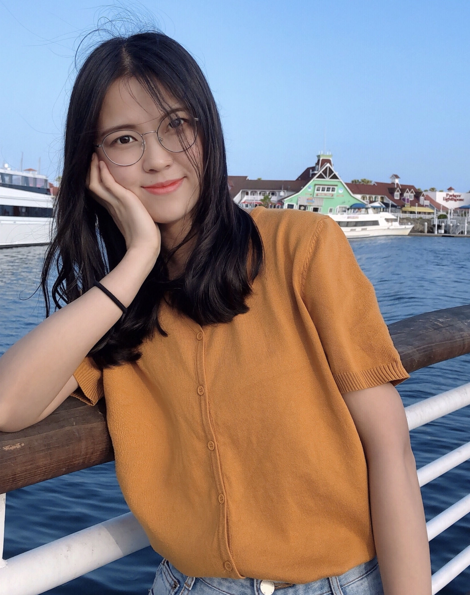

Yuying Ge 葛玉莹 yyge13@gmail.com yyge13@gmail.com Shenzhen, China Shenzhen, China |
 |
Biography
I am currently a Researcher at Tencent AI Lab, working on multimodal foundation models.
In Aug 2023, I got my Ph.D. degree from the Department of Computer Science, The University of Hong Kong,
under the supervision of Prof. Ping Luo.
I was also a visiting student at UCSD, working with Prof. Xiaolong Wang.
We are actively looking for self-motivated interns to work on related research topics. Please feel free to reach out if you are interested.
News
- [11/2023] We release SEED-Bench-2, evaluating the hierarchical capabilities of MLLMs.
- [10/2023] We release an online gradio demo of SEED-LLaMA.
- [10/2023] We release the technical report of SEED-LLaMA, which is empowered by the improved SEED-2 tokenizer.
- [08/2023] We release SEED-Bench, the most comprehensive MLLM benchmark to date.
- [07/2023] We release our SEED. Stay tuned for more updates.
- [02/2023] Three papers were accepted by CVPR 2023.
- [07/2022] One paper was accepted by ECCV 2022.
- [03/2022] One paper was accepted by CVPR 2022 as oral.
- [11/2021] One paper was accepted by IEEE TIP.
- [03/2021] Two papers were accepted by CVPR 2021.
- [03/2019] One paper was accepted by CVPR 2019.
Publications
|
SEED-Bench-2: Benchmarking Multimodal Large Language Models,
Bohao Li*, Yuying Ge*, Yixiao Ge, Guangzhi Wang, Rui Wang, Ruimao Zhang, Ying Shan, arXiv preprint, 2023 [paper|code|dataset|leaderboard] |
|
|
Making LLaMA SEE and Draw with SEED Tokenizer,
Yuying Ge*, Sijie Zhao*, Ziyun Zeng, Yixiao Ge, Chen Li, Xintao Wang, Ying Shan, arXiv preprint, 2023 [paper|code|project|gradio demo] |
|
|
Planting a SEED of Vision in Large Language Model,
Yuying Ge*, Yixiao Ge*, Ziyun Zeng, Xintao Wang, Ying Shan, Technical Report, 2023 [paper|code] |
|
|
Policy Adaptation from Foundation Model Feedback,
Yuying Ge, Annabella Macaluso, Li Erran Li, Ping Luo, Xiaolong Wang IEEE/CVF Conference on Computer Vision and Pattern Recognition (CVPR) 2023 [paper|project] |
|
|
Learning Transferable Spatiotemporal Representations from Natural Script Knowledge,
Ziyun Zeng*, Yuying Ge*, Xihui Liu, Bin Chen, Ping Luo, Shu-Tao Xia, Yixiao Ge IEEE/CVF Conference on Computer Vision and Pattern Recognition (CVPR) 2023 [paper|code] |
|
|
MILES: Visual BERT Pre-training with Injected Language Semantics for Video-text Retrieval,
Yuying Ge, Yixiao Ge, Xihui Liu, Alex Jinpeng Wang, Jianping Wu, Ying Shan, Xiaohu Qie and Ping Luo European Conference on Computer Vision (ECCV) 2022 [paper|code] |
|
|
Bridging Video-text Retrieval with Multiple Choice Questions,
Yuying Ge, Yixiao Ge, Xihui Liu, Dian Li, Ying Shan, Xiaohu Qie and Ping Luo IEEE/CVF Conference on Computer Vision and Pattern Recognition (CVPR) 2022 (oral) [paper|code|project] |
|
|
MetaDance: Few-shot Dancing Video Retargeting via Temporal-aware Meta-learning,
Yuying Ge, Yibing Song, Ruimao Zhang and Ping Luo arXiv preprint, 2022 [paper|demo] |
|
|
MetaCloth: Learning Unseen Tasks of Dense Fashion Landmark Detection from a Few Samples,
Yuying Ge, Ruimao Zhang, and Ping Luo IEEE Transactions on Image Processing (TIP) 2021 [paper] |
|
|
Parser-Free Virtual Try-on via Distilling Appearance Flows,
Yuying Ge, Yibing Song, Ruimao Zhang, Chongjian Ge, Wei Liu, and Ping Luo IEEE/CVF Conference on Computer Vision and Pattern Recognition (CVPR) 2021 [paper|code] |
|
|
DeepFashion2: A Versatile Benchmark for Detection, Pose Estimation, Segmentation and Re-Identification of Clothing Images,
Yuying Ge, Ruimao Zhang, Xiaogang Wang, Xiaoou Tang, and Ping Luo IEEE/CVF Conference on Computer Vision and Pattern Recognition (CVPR) 2019 [paper|dataset] |
Education
Ph.D., Department of Computer Science, The University of Hong Kong, 2019 - 2023
Bachelor, University of Electronic Science and Technology of China (UESTC) (ranking 1/525), 2014 - 2018
Experiences
Senior Researcher in Tencent AI Lab, 2023 - Present
Intern in Tencent ARC Lab, 2021 - 2022
Intern in Tencent AI Lab, 2020 - 2021
Research Assistant in Multimedia Lab (MMLab), The Chinese University of Hong Kong, 2018 - 2019
Intern in SenseTime Research, 2017 - 2018
Academic Activities
Reviewer for CVPR, ICML, NeurIPS, ECCV, ICCV, TPAMI, TNNLS, TMM, TVCJ
Organizer of DeepFashion2 Challenge Clothes Landmark Detection
and Clothes Retrieval in 2019, 2020
Organizer of Third Workshop on Computer Vision for Fashion, Art and Design in CVPR, 2020
Organizer of Second Workshop on Computer Vision for Fashion, Art and Design in ICCV, 2019
© Yuying Ge | Last updated: Dec. 2021